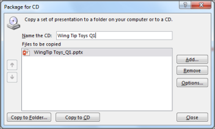
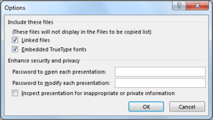

Insert a blank recordable CD (CD-R), a blank rewritable CD (CD-RW), or a CD-RW (that contains existing content that can be overwritten) in the disk drive.
In PowerPoint, click File, click Export, click Package Presentation for CD, and then click Package for CD.
In the Package for CD dialog box, type a name for your CD in the Name the CD box.
To add one or more presentations to package together, click Add, select the presentation, and then click Add. Repeat this step for each presentation that you want to add.
Tip: If you add more than one presentation, they'll play in the order in which they are listed in the Files to be copied list. Use the arrow buttons on the left side of the dialog box to re-order the list of presentations.
To include supplementary files such as TrueType fonts or linked files, click Options.

Under Include these files, select the applicable check boxes:
To inspect your presentation for hidden data and personal information, select the Inspect presentation for inappropriate or private information check box.

Click OK to close the Options dialog box.
In the Package for CD dialog box, click Copy to CD.
Insert a USB flash drive in a USB slot in your computer.
In PowerPoint, click File, click Export, click Package Presentation for CD, and then click Package for CD.
In the Package for CD dialog box, type a name for your CD in the Name the CD box.
To add one or more presentations to package together, click Add, select the presentation, and then click Add. Repeat this step for each presentation that you want to add.
Tip: If you add more than one presentation, they'll play in the order in which they are listed in the Files to be copied list. Use the arrow buttons on the left side of the dialog box to re-order the list of presentations.
To include supplementary files such as TrueType fonts or linked files, click Options.
Under Include these files, select the applicable check boxes:
To inspect your presentation for hidden data and personal information, select the Inspect presentation for inappropriate or private information check box.
Click OK to close the Options dialog box.
In the Package for CD dialog box, click Copy to Folder.
In the Copy to Folder dialog box, select Browse.
In the Choose Location dialog box, navigate to your USB flash drive, select it or a subfolder in it, and then click Select.
The folder and path you chose are added to the Location box in the Copy to Folder dialog box.
PowerPoint asks you a question regarding linked files. It is best to answer Yes to ensure that all necessary files for the presentation are included in the package that is saved to the USB flash drive.
PowerPoint begins copying files, and when it is done it opens a window showing the complete package on the USB flash drive.